概要
実際にマークダウンエディタを作りながら、Nuxt、Firebase、GitHubActionsの使い方を学びましょう！

What you'll learn
- Vue.js, Nuxt.jsとは何か(ちょっと)分かる
- Nuxt.jsのディレクトリの役割が(ちょっと)分かる
- Pages, Components, Storeの使い方が(ちょっと)分かる
Vue.jsとNuxt.jsとは何か(ちょっと)分かる
vue.js/Nuxt.jsのポジションやコードの読み方を解説します。
ちょっとだけ語れるようになります。
Nuxt.jsのディレクトリの役割が(ちょっと)分かる
初見でまず混乱するNuxtのディレクトリ構成を今回利用するものをメインに解説します。
各ディレクトリ構成の役割がなんとなく分かります。
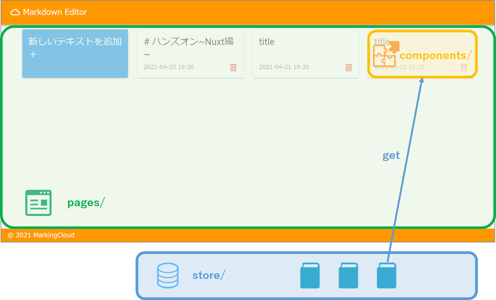
Pages, Components, Storeの使い方が(ちょっと)分かる
今回のハンズオンの中では主にPages. Components, Storeの機能を利用します。
これらの使い方がふんわりと理解できます。
Vue.jsとは
Vue.jsとはJavaScriptのフレームワークの1つです。
小さくシンプルに始めることができる、というコンセプトで開発されています。
特徴1：小さくはじめてモジュールを追加して増強していく
Vue.jsの持つ機能は少なく、UIを作る程度のことしかできない。
その代わり周辺モジュールが充実しており、これらを追加することで複雑な処理に対応可能。
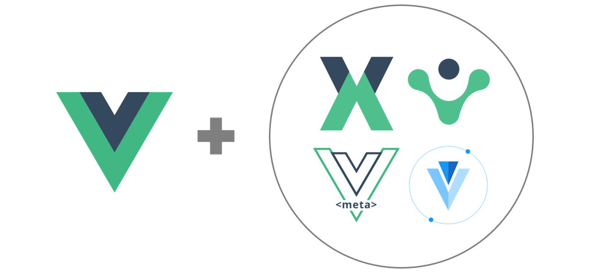
特徴2：コンポーネント指向
コンポーネント指向 ＝ デザインパーツの組み合わせでUIを構成すること
同じファイルに HTML, CSS, JS を書き込んでしまい、コンポートント化して利用する。
特徴3：学習コストが低い
と言われている。
ただJavascriptがそもそも難しい。
Nuxt.jsとは
Vue周辺のエコシステムをまとめてパッケージにして、さらにいい感じに処理が自動化されたもの。
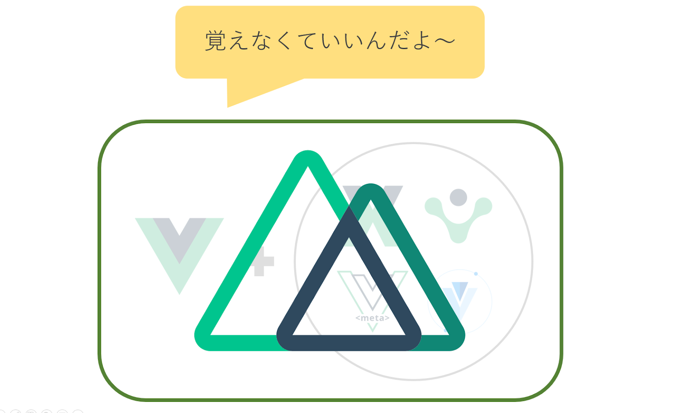
周辺のモジュールを自分で整えていくのに比べると圧倒的に楽！
かなりパワフルに自動化されてる。「えっ」ってなるぐらい自動化されている。
その分暗黙の了解的な記法が多く、知らないと「本当に何もわからん」となる。
1.Cloud Shellで開く
Cloud Shellを開いてコードをクローンしましょう。
上のリンクをクリックするとCloud Shellが開き、リポジトリをクローンしてコードを取得してきます。
ディレクトリ構成はこんな感じになっています。
handson-markdowne-editor_part1-nuxt
├── README.md
├── assets
│ ├── README.md
│ └── variables.scss
│
├── components <---------------★
│ ├── CardComponent.vue
│ ├── EditorComponent.vue
│ ├── NewCardComponent.vue
│ └── README.md
│
├── layouts
│ ├── README.md
│ ├── default.vue
│ └── error.vue
│
├── middleware
│ └── README.md
│
├── nuxt.config.js
├── package-lock.json
├── package.json
│
├── pages <---------------★
│ ├── README.md
│ ├── _id.vue.markingcloud
│ ├── home.vue.markingcloud
│ └── index.vue.markingcloud
│
├── plugins
│ ├── README.md
│ └── localStorage.js
│
├── static
│ ├── README.md
│ ├── favicon.ico
│ └── markingcloud-icon.png
│
└── store <---------------★
├── README.md
└── memos.js
うまく開かない場合は
code.4-1 coludshell
mkdir cloudshell_open cd cloudshell_open git clone https://github.com/MarkingCloud/handson-markdowne-editor_part1-nuxt.git cd handson-markdowne-editor_part1-nuxt
2.npmモジュールのインストール
nodeのバージョンを揃えます。
以下コマンドを実行して、バージョンがv14.15.0となっていることを確認しください。
code.4-2 coludshell
nvm install v14.15.0 nvm use v14.15.0 node --version
npmモジュールをインストールします。
次のコマンドを実行してください。
code.4-3 coludshell
npm install
Pages/を編集してメインになるページを表示しましょう。

1.ローカルで立ち上げてみる
Nuxtのwebサーバ機能を使ってローカルでアプリを立ち上げてみましょう。
次の操作を行って下さい
- 次のコマンドを実行する。
code.5-1 coludshell
npm run dev
- 出力されたURLをクリックする。
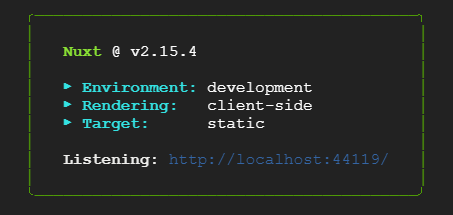
以下のようなページが表示されます。
まだPages/の中身が空なので、メインになるページが表示されません。
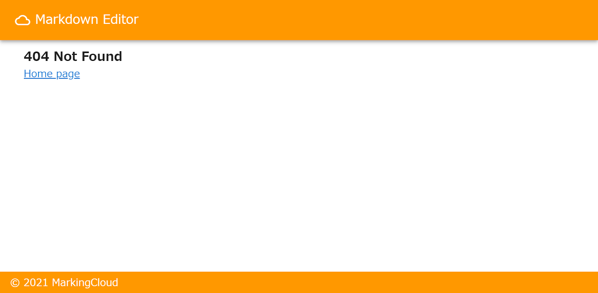
2.Indexページ作成
index.htmlに当たるページを作成してみましょう。
次の操作を行ってください。
- webサーバーにしているshellはそのままで、新しいタブを開く。
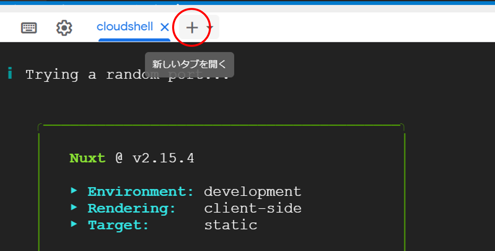
- 次のコマンドを実行して作業ディレクトリを移動する。
code.5-2 coludshell
cd ~/cloudshell_open/handson-markdowne-editor_part1-nuxt/
- 次のコマンドを実行してindex.vueファイルを作成する。
code.5-3 coludshell
mv pages/index.vue.markingcloud pages/index.vue
- 開いているページをリロードする。
次のようなページが生成されます。
URLのルート(‘/')にindex.vueが割り当てられました。

3.HOMEページ作成（静的ルーティング）
index以外のページを作成してみましょう。
次の操作を行って下さい。
- 次のコマンドを実行してhome.vueファイルを作成する。
code.5-4 coludshell
mv pages/home.vue.markingcloud pages/home.vue
- 開いているページにてURLに「ルートURL/home」を打ち込み移動する。
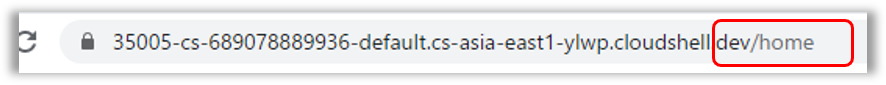
次のようなページが生成されます。
Nuxtではpages/の中に作成したファイル名がそのままURLのパスとなり、
そのパスへのルーティングは自動で生成されます。
試しに他の名前にファイル名を変更してみましょう。
次の操作を行って下さい。
- 次のコマンドを実行しする。
code.5-5 coludshell
mv pages/home.vue pages/hoge.vue
開いているページへ反映されるはずです。
4.Editorページ作成（動的ルーティング）
Editorページとして動的なIDに対応するページを作成してみましょう。
次の操作を行って下さい。
- 次のコマンドを実行して_id.vueファイルを作成する。
code.5-6 coludshell
mv pages/_id.vue.markingcloud pages/_id.vue
- 開いているページにてURLに「ルートURL/適当な値」を打ち込み移動する。
次のようなページが生成されます。
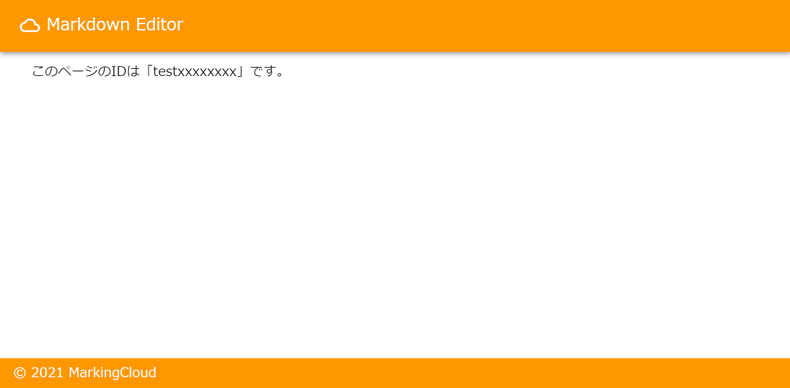
Nuxtではアンダーバー(‘_')を付けたファイルが動的なURLに対応します。
動的なルーティングのパスも自動で生成されています。
このルーティングの自動生成はNuxtの大きな特徴です。
ここまででメインコンテンツに必要なページは作成し終わりました。
コンポーネント指向について理解しましょう。
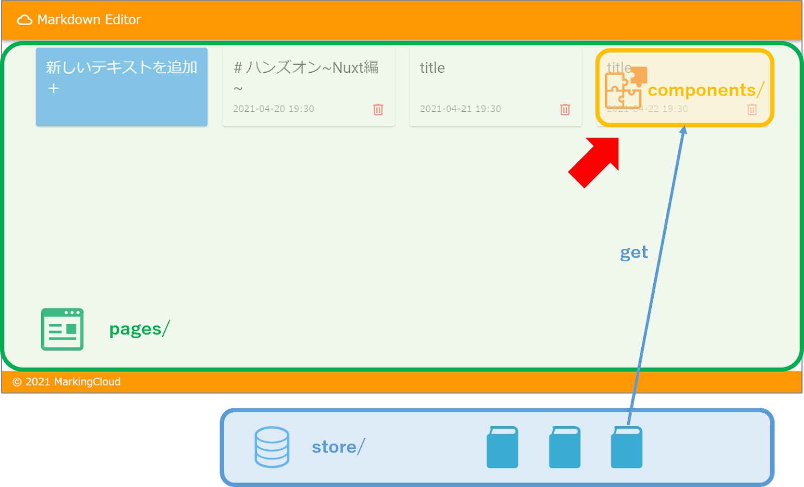
1.コンポーネントの使いどころ
コンポーネントが利用されていることを確認しましょう。
次の操作を行ってください。
- 次のファイルを確認する。
- pages/index.vue
- components/NewCardComponent.vue
- components/CardComponent.vue
pages/index.vue
<template>
<v-row>
<!-- テキスト追加カード -->
<v-col cols="3">
<NewCardComponent />
</v-col>
<!-- カードリスト -->
<v-col v-for="memo in memos" :key="memo.id" cols="3">
<CardComponent :memo="memo" />
</v-col>
</v-row>
</template>
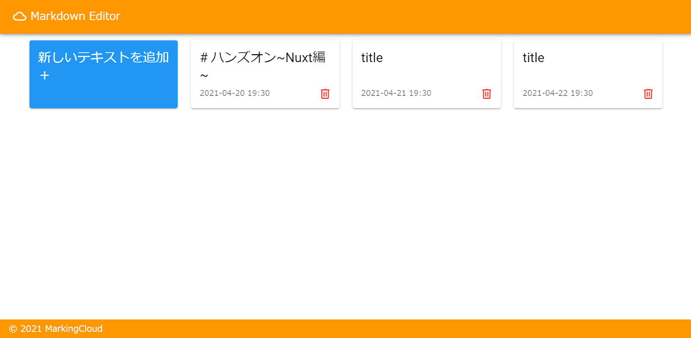
要素をコンポーネント化することで、コードと画面の構造が一致して理解しやすくなっていると思います。
また、Components/に.vueファイルを作成することで、自動でコンポーネントとして利用できるようになります。
さらにPages側でimport文が不要で、ファイルの名前でそのまま利用できるようになります。
2.コンポーネントのコメントアウト解除
_id.vueにてEditorComponentのコメントアウトを解除して、画面を完成させましょう。
次の操作を行ってください。
- pages/_id.vue次の通り編集する
- L5のコメントアウトを解除
- L4をコメントアウト
code.6-1 pages/_id.vue
<template>
<v-row>
<v-col cols="12">
<!-- <span> このページのIDは「{{ id }}」です。</span> -->
<EditorComponent />
</v-col>
</v-row>
</template>
次のようなページが作成されます。
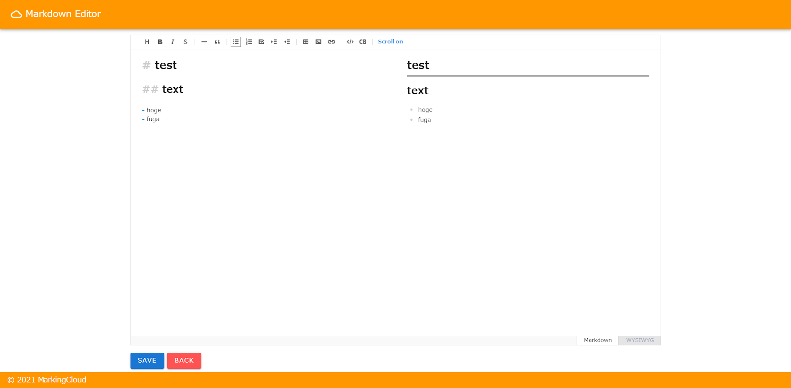
これで必要な画面は揃いました。残りはデータの取得/編集機能の作成になります。
Storeを使ってデータの呼び出しと保存を行いましょう。
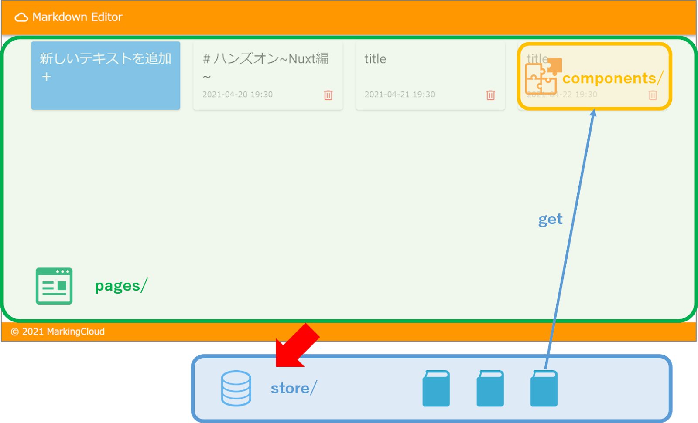
1.Storeとは？
Nuxtの状態管理ツール。ほぼVuexと思ってもらって良いと思います。
データをここに入れておくことで、pages/、componets/などいろいろな場所から自由に呼び出すことができます。
アーキテクチャはFluxを採用しています。
MVCモデルの課題を解消する新しいデータ管理の考え方です。
（Fluxについてはこちらの記事が分かりやすかったです。）
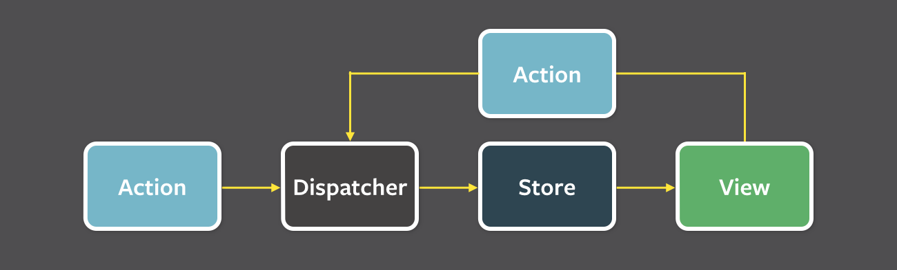
2.state作成
データをオブジェクトや配列の形で保持しておきたいときはstateに記入します。
MarkdownEditrの初期値を作成してみましょう。
次の操作を行ってください。
- store/memos.jsを次の通り編集する
- L4～L51のコメントアウトを解除
code.7-1 store/memos.js
// データ格納
export const state = () => ({
list: [
{
id: 'id1',
data: {
title: '# ハンズオン~Nuxt編~',
timestamp: '2021-04-20 19:30',
text: `# ハンズオ~Nuxt編~
## **コンテンツ**
### **ハンズオン形式でアプリ作成の流れを学ぼう！**

今回から新年度の新たな試みとして、**3部構成のシリーズイベント**を行います！
このシリーズでは「爆速アプリ開発」などの記事でよく見かける **Nuxt.js × Firebase** の組み合わせと、
CI/CDツールの **GitHub Actions** を使って、マークダウンエディタを題材にアプリ作成のハンズオンを行います。
今回は **Nuxt編** ！
初見だと混乱しがちな機能を整理しつつ、一緒にフロントエンドの機能を作成していきましょう！
ハンズオンでは以下のサービスを使う予定です。
- GCP Cloud Shell Editor
- Vue.js
- Nuxt.js
（※ Vue, Nuxt に詳しめの方には物足りない内容になります。ご了承ください。）
**第2弾はこちら！** → [【Nuxt×Firebase×GitHubActions】アプリ作成ハンズオン〜Firebase〜編](https://markingcloud.connpass.com/event/208934/)
**第3弾はこちら！** → [【Nuxt×Firebase×GitHubActions】アプリ作成ハンズオン〜CI/CD編〜](https://markingcloud.connpass.com/event/208935/)`,
},
},
{
id: 'id2',
data: {
title: 'title',
timestamp: '2021-04-21 19:30',
text: 'test text 1\n',
},
},
{
id: 'id3',
data: {
title: 'title',
timestamp: '2021-04-22 19:30',
text: 'test text 2\n',
},
},
],
})
- pages/index.vueを次の通り編集する
- L17～L22のコメントアウトを解除
code.7-2 pages/index.vue
<script>
export default {
// 処理結果を変数へ格納
computed: {
memos() {
// store/memos.js/listを取得
return this.$store.state.memos.list
},
},
}
</script>
初期値が入力されたことで、カードが出現します。
ポイントはthis.$store.stateで、Storeへアクセスできるところです。
ここでもimportなどの呼び出しの処理は不要です。
3.mutations/actions作成
stateの値を編集するためにmutationsとactionsを作成します。
Fluxではデータの整合性を保つため、stateを直接編集することができません。
- action → mutations → state
- mutations → state
のどちらかでデータを編集する必要があります。
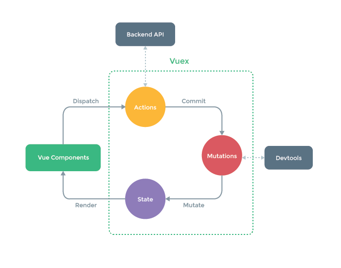
次の操作を行ってください。
- store/memos.jsを次の通り編集する
- L57～L70のコメントアウトを解除
- L75～L79のコメントアウトを解除
code.7-3 store/memos.js
// データを操作する(同期的処理)
export const mutations = {
// ID検索と編集/要素追加
save(state, { id, data }) {
const target = state.list.find((item) => item.id === id)
if (target) {
target.data = data
} else {
state.list.push({ id, data })
}
},
// 要素削除
remove(state, id) {
const index = state.list.findIndex((item) => item.id === id)
state.list.splice(index, 1)
},
}
// 非同期処理を実行する
export const actions = {
// list更新＆DB通信を模して1秒待機
async saveLocalMemo(context, { newid, newdata }) {
context.commit('save', { id: newid, data: newdata })
await new Promise((resolve) => setTimeout(resolve, 1000))
},
}
コレでstateの中を編集できるようになりました！
再度ページを更新してサービスの動作確認を行ってみてください。
更新した値が反映されたり、カードの追加/削除機能が実装できているはずです。
Nuxtを使ってMarkdownEditorを作成することができました。
ただし、まだデータの永続化やサービスの公開が出来ていません。
次回予告
次回は～Firebase編～となります。
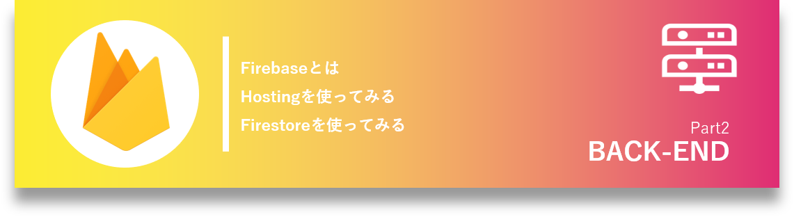
次のテーマのコンテンツを予定しています。
- Firebaseとは
- nuxt/firebaseを導入する
- Firestoreを使ってみる
- Hostingを使ってみる
お楽しみに！
アンケート
最後にアンケートがありますので、より良い勉強会作りのためにご協力お願い致します。